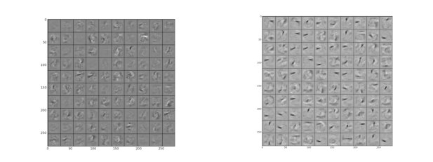

Next: Recognizing 50 human action
Up: Summary of References Related
Previous: The Stanford / Technicolor
Contents
Subsections
When a large feedforward neural network is trained on a small training set, it typically performs poorly on held-out test data. This "overfitting" is greatly reduced by randomly omitting half of the feature detectors on each training case. This prevents complex co-adaptations in which a feature detector is only helpful in the context of several other specific feature detectors. Instead, each neuron learns to detect a feature that is generally helpful for producing the correct answer given the combinatorially large variety of internal contexts in which it must operate. Random "dropout" gives big improvements on many benchmark tasks and sets new records for speech and object recognition.
- Paper about Dropout
- Standard way to reduce test error
- averaging different models
- Computationally expensive in training and test
- Dropout
- Small training set
- Prevents ``overfitting''
- They use
- Instead of L2 norm, they set an upper bound for each individual
neuron.
- Mean network : At test time divide all the outgoing weights
by 2 to compensate dropout
- Specific case
- Single hidden layer network
- N hidden units
- ``Softmax'' output
- dropout
- during test using mean network
- Exactly equivalent to taking the geometric mean of the
probability distributions over labels predicted by all
possible networks
- Results
- MNIST
- No dropout : 160 errors
- Dropbout : 130 errors
- Dropout + rm random pixels : 110 errors
- Deep Boltzmann machine : 88 errors
- + Dropout : 79 errors
Figure 2:
Visualization of features learned by first layer hidden units left without dropout and right using dropout
|

|
- TIMIT
- 4 Fully-connected hidden layers 4000 units per layer
- + 185 ``softmax'' output units
- Without dropout :
- Dropout on hidden units :
- CIFAR-10
- Best published :
- 3 Conv+Max-pool 1 Fully :
- + Dropout in last hidden layer :
- ImageNet
- Average of 6 separate models :
- state-of-the-art :
- 5 Conv+Max-pool
- + 2 Fully
- + 1000 ``softmax''
- Without dropout :
- Dropout in the 6th :
- Reuters
- 2 fully of 2000 hidden units
- Without dropout :
- Dropout :
Next: Recognizing 50 human action
Up: Summary of References Related
Previous: The Stanford / Technicolor
Contents
Miquel Perello Nieto
2014-05-14